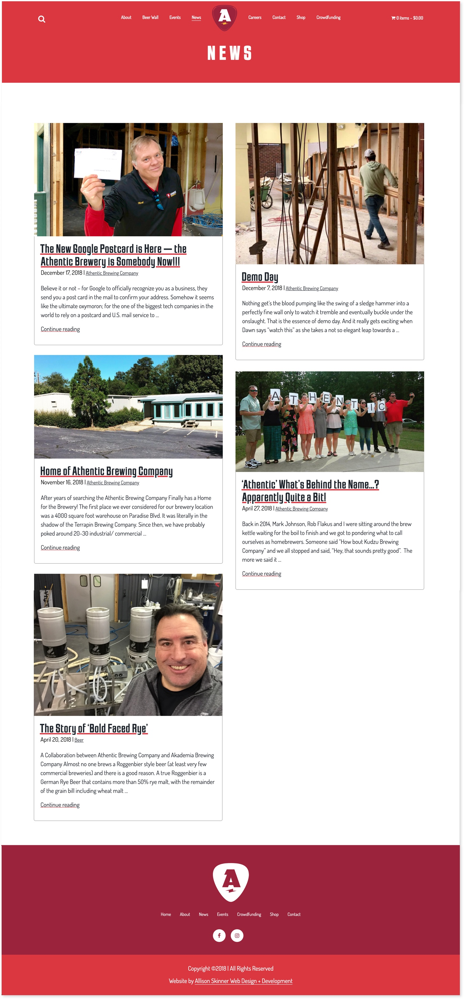

For the Athentic Brewing Company website, I didn’t want to use the typical colors you see in a brewery website (dark green, ale brown and wheat yellow). I didn’t want the website to be dark, serious and masculine. I wanted it to reflect the joy my father and his partner Mark have opening this brewery. That’s why there are bright colors, animated beer bubbles and lightning bolts used throughout the site.
Adsmith, an agency local to Athens, designed the logo and initial branding – and I think they did a great job! I designed and developed the website.
Athentic News
I encouraged my father, Paul Skinner, to write regular blog posts for Athentic Brewing Company. It’s been so much fun to see him really get into blogging and keeping all the Athentic fans up-to-date on brewery renovations and beer brewing.
The main news feed features a two-column masonry layout of blog posts that have the featured image, title, publication date, category and excerpt text.

The individual news posts feature a large featured image and easy-to-read post content. Please follow along Athentic Brewing Company’s journey here.
Athentic Swag
The Athentic Brewing Company website needed an online shop to start selling Athentic ‘swag’, starting with t-shirts! It was a fun process of guiding my father and Mark through setting up their inventory, shipping, tax and payment methods. They had no idea so much work went into selling a t-shirt!
The individual product pages has mulitple product images, product description and size variants.
Careers
As we get closer to the opening date of Athentic Brewing Company (June 2019), there have been new elements to add to the site, such as a careers page! For the careers page, Paul and Mark wanted to give a brief idea of what it’ll be like working for Athentic (fun but hard work), as well as a feed of job listings.
The individual career page features a job description, responsibilities, requirements and preferred skills. There is also an application form, so job applicants can apply to jobs directly on the Athentic website.
Crowdfunding
While the Athentic Brewing Company is still under renovation (expected launch June 2019), there is an active crowdfunding campaign to fund a brewing system from Ruby Pilot Brewing. There have been many loyal Athentic fans over the years, and the crowdfunding has given them the opportunity to show their support.
The crowdfunding takes place directly on the Athentic website, with multiple tier options.
My work will likely never end with the Athentic website because the website will grow as the the business grows! I’m grateful that I can be part of my father’s lifelong dream of opening a brewery! Please visit Athentic Brewing to learn more about the brewery coming to the normaltown neighborhood of Athents, Ga.